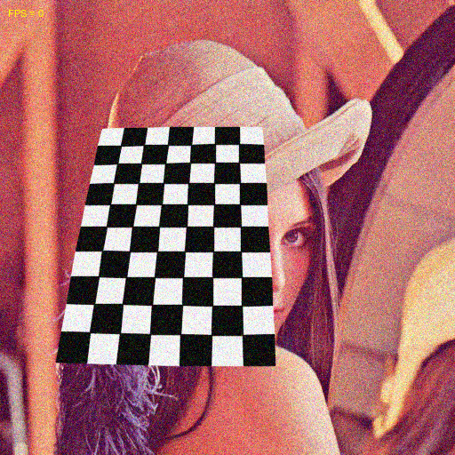
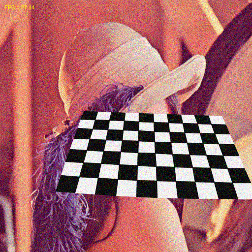

Synthetic video demo
Demonstrates using VideoSynth classes as stub for cv.VideoCapture. Capture object is created using the helper function createVideoCapture.
Sources:
create synth video capture object
if true %cap = createVideoCapture(0, 'aruco'); cap = createVideoCapture([], 'chess'); else cap = createVideoCapture('synth|class=chess|framecount=500|bg=../../test/lena.jpg|size=320x320|noise=0.1|gridsize=9x6'); end assert(cap.isOpened());
set a limit on iterations when we're publising demo
if isa(cap, 'VideoSynthBase') cap.set('FrameCount', 50); end
prepare plot
img = cap.read(); assert(~isempty(img)); hImg = imshow(img, 'InitialMagnification',100, 'Border','tight'); hTxt = text(10, 15, 'FPS = 0', 'FontSize',8, 'Color','y');
main loop
counter = 0; tID = tic(); while ishghandle(hImg) % grab new frame img = cap.read(); if isempty(img); break; end % frames-per-second counter = counter + 1; fps = counter / toc(tID); % display set(hTxt, 'String',sprintf('FPS = %.2f', fps)) set(hImg, 'CData',img) if ~mexopencv.isOctave() drawnow limitrate else drawnow end end cap.release();